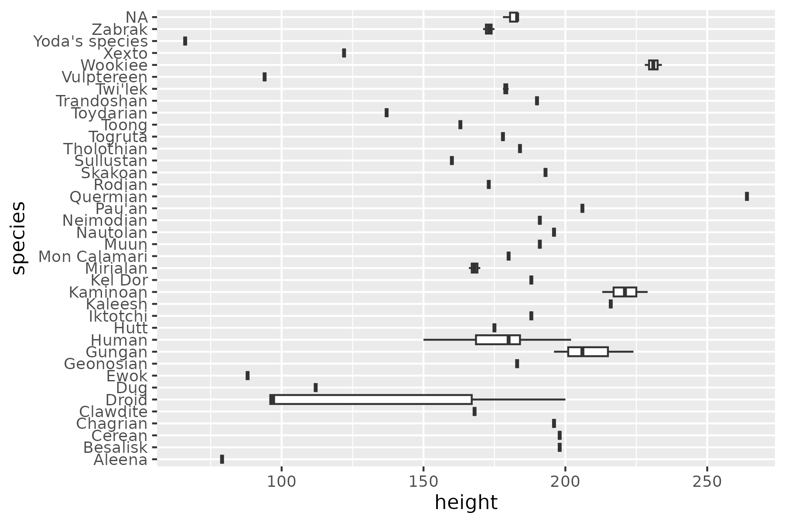
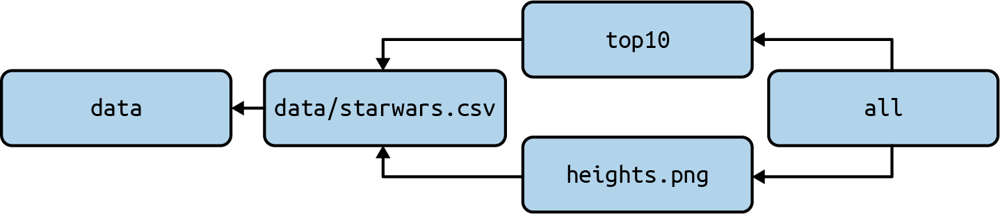

6 Project Management with Make
I hope that by now you have come to appreciate that the command line is a very convenient environment for working with data. You may have noticed that, as a consequence of working with the command line, we:
- Invoke many different commands.
- Work from various directories.
- Develop our own command-line tools.
- Obtain and generate many (intermediate) files.
Since this is an exploratory process, our workflow tends to be rather chaotic, which makes it difficult to keep track of what we’ve done. It’s important that our steps can be reproduced, by us or by others. When you continue with a project from some time ago, chances are that you have forgotten which commands you ran, from which directory, on which files, with which parameters, and in which order. Imagine the challenges of sharing your project with a collaborator.
You can recover some commands by digging through the output of the history command, but this is, of course, not a reliable approach. A somewhat better approach would be to save your commands to a shell script. At least this allows you and your collaborators to reproduce the project. A shell script is, however, also a sub-optimal approach because:
- It is difficult to read and to maintain.
- Dependencies between steps are unclear.
- Every step gets executed every time, which is inefficient and sometimes undesirable.
This is where make really shines1. make is a command-line tool that allows you to:
- Formalize your data workflow steps in terms of input and output dependencies.
- Run specific steps of your workflow.
- Use inline code.
- Store and retrieve data from external sources.
In the first edition, this chapter used drake2 instead of make. Drake was supposed to be a successor to make with additional features to work with data. Unfortunately, Drake was abandoned by its creators in 2016 with too many unresolved bugs. That’s why I’ve decided to use make instead.
An important, related topic is version control, which allows you to track changes of your project, back up your project to a server, collaborate with others, and retrieve earlier versions when things go wrong. A popular command-line tool to do version control is git3. It’s often used in combination with GitHub, an online service for distributed version control. Many open source projects, including this book, are hosted on GitHub. The topic of version control is beyond the scope of this book, but I highly recommend that you look into this, especially once you start collaborating with others. At the end of this chapter I recommend a few resources to learn more.
6.1 Overview
Managing your data workflow with make is the main topic of this chapter. As such, you’ll learn about:
- Defining your workflow with a Makefile.
- Thinking about your workflow in terms of input and output dependencies.
- Running tasks and building targets.
cd /data/ch06
l
total 28K
-rw-r--r-- 1 dst dst 37 Nov 8 21:17 Makefile.test
-rw-r--r-- 1 dst dst 21 Nov 8 21:17 numbers-write-var.make
-rw-r--r-- 1 dst dst 26 Nov 8 21:17 numbers-write.make
-rw-r--r-- 1 dst dst 16 Nov 8 21:17 numbers.make
-rw-r--r-- 1 dst dst 432 Nov 8 21:17 starwars.make
-rw-r--r-- 1 dst dst 263 Nov 8 21:17 tasks.make
-rw-r--r-- 1 dst dst 27 Nov 8 21:17 template.makeThe instructions to get these files are in Chapter 2. Any other files are either downloaded or generated using command-line tools.
6.2 Introducing Make
make organizes command execution around data and its dependencies. Your data processing steps are formalized in a separate text file (a workflow). Each step may have inputs and outputs. make automatically resolves their dependencies and determines which commands need to be run and in which order.
This means that when you have, say, an SQL query that takes ten minutes, it only has to be executed when the result is missing or when the query has changed afterwards. Also, if you want to (re-)run a specific step, make only re-runs the steps on which that step depends. This can save you a lot of time.
Having a formalized workflow allows you to easily pick up your project after a few weeks and to collaborate with others. I strongly advise you to do this, even when you think this will be a one-off project, because you never know when you need to run certain steps again, or reuse them in another project.
6.3 Running Tasks
By default, make searches for a configuration file called Makefile in the current directory. It can also be named makefile (lower case), but I recommend calling your file Makefile because it’s more common and that way it appears at the top of a directory listing. Normally you would only have one configuration file per project. Because this chapter discusses many different ones, I haven given each of them a different filename with the .make extension. Let’s start with the following Makefile:
bat -A numbers.make
───────┬────────────────────────────────────────────────────────────────────────
│ File: numbers.make
───────┼────────────────────────────────────────────────────────────────────────
1 │ numbers:␊
2 │ ├──────┤seq·7␊
───────┴────────────────────────────────────────────────────────────────────────This Makefile contains one target called numbers. A target is like a task. It’s usually the name of a file you’d like to create but it can also be more generic than that. The line below, seq 7, is known as a rule. Think of a rule as a recipe; one or more commands that specify how the target should be built.
The whitespace in front of the rule is a single tab character. make is picky when it comes to whitespace. Beware that some editors insert spaces when you press the TAB key, known as a soft tab, which will cause make to produce an error. The following code illustrates this by expanding the tab to eight spaces:
< numbers.make expand > spaces.make
bat -A spaces.make
───────┬────────────────────────────────────────────────────────────────────────
│ File: spaces.make
───────┼────────────────────────────────────────────────────────────────────────
1 │ numbers:␊
2 │ ········seq·7␊
───────┴────────────────────────────────────────────────────────────────────────
make -f spaces.make ➊
spaces.make:2: *** missing separator (did you mean TAB instead of 8 spaces?). S
top. ➋
rm spaces.make- I need to add the
-foption (short for the--makefileoption) because the configuration file isn’t called Makefile, which is the default. - One of the more helpful error messages you’ll find at the command line!
From now on, I’ll rename the appropriate file to Makefile because that matches real-world use more closely. So, if I just run make:
cp numbers.make Makefile
make
seq 7
1
2
3
4
5
6
7Then we see that make first prints the rule itself (seq 7), and then the output generated by the rule. This process is known as building a target. If you don’t specify the name of a target, then make will build the first target specified in the Makefile. In practice though, you’ll most often be specifying the target you’d want to build:
make numbers
seq 7
1
2
3
4
5
6
7make was originally created to ease the compilation of source code, which explains some of the terminology like target, rule, and building.
In this case, we’re not actually building anything, as in, we’re not creating any new files. make will happily build our target numbers again, because it’s not finding a file called numbers. In the next section I’ll go into this.
Sometimes it’s useful to have a target that builds regardless of whether a file with the same name exists. Think of tasks that you need to perform as part of a project. It’s good practice to declare those targets as phony by using a special target called .PHONY at the top of your Makefile, followed by the names of the phony targets. Here’s an example Makefile that illustrates to use of phony targets:
bat tasks.make
───────┬────────────────────────────────────────────────────────────────────────
│ File: tasks.make
───────┼────────────────────────────────────────────────────────────────────────
1 │ .PHONY: clean publish docker-run
2 │
3 │ clean:
4 │ rm book/2e/book.md book/2e/render*.rds
5 │
6 │ publish:
7 │ (cd www && hugo) && netlify deploy --prod --dir www/public
8 │
9 │ docker-run:
10 │ docker run -it --rm -v $$(pwd)/book/2e/data:/data -p 8000:8000
│ datasciencetoolbox/dsatcl2e:latest ➊
───────┴────────────────────────────────────────────────────────────────────────- Note the extra dollar sign in front of
$(pwd). This is needed becausemakeuses a single dollar sign to refer to various special variables, which I’ll explain later.
The above is taken from a Makefile I use while working on this book. You could say that I’m using make as a glorified task runner. Although this wasn’t the primary purpose of make, it still provides a lot of value because I don’t need to remember or look up what incantation I used. Instead, I type make publish and the latest version of the book is published. It’s perfectly fine to put long-running commands in a Makefile.
And make can do much more for us!
6.4 Building, For Real
Let’s modify our Makefile such the output of the rule is written to a file numbers.
cp numbers-write.make Makefile
bat Makefile
───────┬────────────────────────────────────────────────────────────────────────
│ File: Makefile
───────┼────────────────────────────────────────────────────────────────────────
1 │ numbers:
2 │ seq 7 > numbers
───────┴────────────────────────────────────────────────────────────────────────
make numbers
seq 7 > numbers
bat numbers
───────┬────────────────────────────────────────────────────────────────────────
│ File: numbers
───────┼────────────────────────────────────────────────────────────────────────
1 │ 1
2 │ 2
3 │ 3
4 │ 4
5 │ 5
6 │ 6
7 │ 7
───────┴────────────────────────────────────────────────────────────────────────Now we can say that make is actually building something. What’s more, if we run it again, we see that make reports that target numbers is up-to-date.
make numbers
make: 'numbers' is up to date.There’s no need to rebuild the target numbers because the file numbers already exists. That’s great because make is saving us time by not repeating work.
In make, it’s all about files. But keep in mind that make only cares about the name of the target. It does not check whether a file of the same name actually gets created by the rule. If we were to write to a file called nummers, which is Dutch for “numbers,” and the target was still called numbers, then make would always build this target. Vice versa, if the file numbers was created by some other process, whether automated or manual, then make would still consider that target up-to-date.
We can avoid some repetition by using the automatic variable $@, which gets expanded to the name of the target:
cp numbers-write-var.make Makefile
bat Makefile
───────┬────────────────────────────────────────────────────────────────────────
│ File: Makefile
───────┼────────────────────────────────────────────────────────────────────────
1 │ numbers:
2 │ seq 7 > $@
───────┴────────────────────────────────────────────────────────────────────────Let’s verify that this works by removing the file numbers and calling make again:
rm numbers
make numbers
seq 7 > numbers
bat numbers
───────┬────────────────────────────────────────────────────────────────────────
│ File: numbers
───────┼────────────────────────────────────────────────────────────────────────
1 │ 1
2 │ 2
3 │ 3
4 │ 4
5 │ 5
6 │ 6
7 │ 7
───────┴────────────────────────────────────────────────────────────────────────Another reason for make to rebuild a target is its dependencies, so let’s discuss that next.
6.5 Adding Dependencies
So far, we’ve looked at targets that exist in isolation. In a typical data science workflow, many steps depend on other steps. In order to properly talk about dependencies in a Makefile, let’s consider two tasks that work with a dataset about Star Wars characters.
Here’s an excerpt of that dataset:
curl -sL 'https://raw.githubusercontent.com/tidyverse/dplyr/master/data-raw/st
arwars.csv' |
xsv select name,height,mass,homeworld,species |
csvlook
│ name │ height │ mass │ homeworld │ species │
├───────────────────────┼────────┼─────────┼────────────────┼────────────────┤
│ Luke Skywalker │ 172 │ 77.0 │ Tatooine │ Human │
│ C-3PO │ 167 │ 75.0 │ Tatooine │ Droid │
│ R2-D2 │ 96 │ 32.0 │ Naboo │ Droid │
│ Darth Vader │ 202 │ 136.0 │ Tatooine │ Human │
│ Leia Organa │ 150 │ 49.0 │ Alderaan │ Human │
│ Owen Lars │ 178 │ 120.0 │ Tatooine │ Human │
│ Beru Whitesun lars │ 165 │ 75.0 │ Tatooine │ Human │
│ R5-D4 │ 97 │ 32.0 │ Tatooine │ Droid │
… with 79 more linesThe first task computes the ten tallest humans:
curl -sL 'https://raw.githubusercontent.com/tidyverse/dplyr/master/data-raw/st
arwars.csv' |
grep Human | ➊
cut -d, -f 1,2 | ➋
sort -t, -k2 -nr | ➌
head ➍
Darth Vader,202
Qui-Gon Jinn,193
Dooku,193
Bail Prestor Organa,191
Raymus Antilles,188
Mace Windu,188
Anakin Skywalker,188
Gregar Typho,185
Jango Fett,183
Cliegg Lars,183- Only keep lines that contain the pattern
Human. - Extract the first two columns.
- Sort the lines by the second column in reverse numeric order.
- By default,
headprints the first 10 lines. You can override this with the-noption.
The second task creates a box plot showing the distribution of heights per species (see Figure 6.1):
curl -sL 'https://raw.githubusercontent.com/tidyverse/dplyr/master/data-raw/st
arwars.csv' |
rush plot --x height --y species --geom boxplot > heights.png
display heights.png
Let’s put these two tasks into a Makefile. Instead of doing this incrementally, I’d first like to show what a complete Makefile looks like and then explain all the syntax step by step.
cp starwars.make Makefile
bat Makefile
───────┬────────────────────────────────────────────────────────────────────────
│ File: Makefile
───────┼────────────────────────────────────────────────────────────────────────
1 │ SHELL := bash
2 │ .ONESHELL:
3 │ .SHELLFLAGS := -eu -o pipefail -c
4 │
5 │ URL = "https://raw.githubusercontent.com/tidyverse/dplyr/master/data-ra
│ w/starwars.csv"
6 │
7 │ .PHONY: all top10
8 │
9 │ all: top10 heights.png
10 │
11 │ data:
12 │ mkdir $@
13 │
14 │ data/starwars.csv: data
15 │ curl -sL $(URL) > $@
16 │
17 │ top10: data/starwars.csv
18 │ grep Human $< |
19 │ cut -d, -f 1,2 |
20 │ sort -t, -k2 -nr |
21 │ head
22 │
23 │ heights.png: data/starwars.csv
24 │ < $< rush plot --x height --y species --geom boxplot > $@
───────┴────────────────────────────────────────────────────────────────────────Let’s go through this Makefile step by step. The first three lines are there to change some default settings related to make itself:
- All rules are executed in a shell, which by default, is
sh. With theSHELLvariable we can change this to another shell, likebash. This way we can use everything that Bash has to offer such as for loops. - By default, every line in a rule is sent separately to the shell. With the special target
.ONESHELLwe can override this so the rule for targettop10works. - The
.SHELLFLAGSline makes Bash more strict, which is considered a best practice. For example, because of this, the pipeline in the rule for targettop10now stops as soon as there is an error.
We define a custom variable called URL. Even though this is only used once, I find it helpful to put information like this near the beginning of the file, so that you can easily make changes to these kinds of settings.
With the special target .PHONY we can indicate which targets are not represented by files. In our case that holds for targets all and top10. These targets will now be executed regardless of whether the directory contains files with the same name.
There are five targets: all, data, data/starwars.csv, top10, and heights.png. Figure 6.1 provides an overview of these targets and the dependencies between them.

Let’s discuss each target in turn:
- The target
allhas two dependencies but no rule. This is like a shortcut to execute one or more targets in the order in which they are specified. In this case:top10andheights.png. The targetallappears as the first target in the Makefile, which means that if we runmake, this target will be built. - The target
datacreates the directory data. Earlier I said thatmakeis all about files. Well, it’s also about directories. This target will only be executed when the directory data doesn’t yet exist. - The target
data/starwars.csvdepends on the targetdata. If there’s nodatadirectory, it will first be created. Once all dependencies are satisfied, the rule will be executed, which involves downloading a file and saving it to a file with the same name as the target. - The target
top10is marked as phony, so it will always be built if specified. It depends on thedata/starwars.csvtarget. It makes use of a special variable,$<which expands to the name of the first prerequisite, namely data/starwars.csv. - The target
heights.png, like targettop10dependsdata/starwars.csvand makes use of both automatic variables we’ve seen in this chapter. See the online documentation if you’d like to learn about other automatic variables.
Last but not least, let’s verify that this Makefile works:
make
mkdir data
curl -sL "https://raw.githubusercontent.com/tidyverse/dplyr/master/data-raw/star
wars.csv" > data/starwars.csv
grep Human data/starwars.csv |
cut -d, -f 1,2 |
sort -t, -k2 -nr |
head
Darth Vader,202
Qui-Gon Jinn,193
Dooku,193
Bail Prestor Organa,191
Raymus Antilles,188
Mace Windu,188
Anakin Skywalker,188
Gregar Typho,185
Jango Fett,183
Cliegg Lars,183
< data/starwars.csv rush plot --x height --y species --geom boxplot > heights.pn
gNo surprises here. Because we didn’t specify any target, the all target will be built, which, in turn, causes both the top10 and heights.png targets to be built. The output of the former is printed to standard output and the latter creates a file heights.png. The data directory is created only once, just like the CSV file is only downloaded once.
There’s nothing more fun than just playing with your data and forgetting everything else. But you have to trust me when I say that it’s worthwhile to keep a record of what you have done using a Makefile. Not only will it make your life easier (pun intended), but you will also start thinking about your data workflow in terms of steps. Just as with your own command-line toolbox, which you expand over time, the same holds for make workflows. The more steps you have defined, the easier it gets to keep doing it, because very often you can reuse certain steps. I hope that you will get used to make, and that it will make your life easier.
6.6 Summary
One of the beauties of the command line is that it allows you to play with your data. You can easily execute different commands and process different data files. It is a very interactive and iterative process. After a while, it is easy to forget which steps you have taken to get the desired result. It’s therefore very important to document your steps every once in a while. This way, if you or one of your colleagues picks up your project after some time, the same result can be produced again by executing the same steps.
In this chapter I’ve shown you that just putting every command in one Bash script is suboptimal. Instead, I proposed to use make as a command-line tool to manage your data workflow. The next chapter covers the third step of the OSEMN model for data science namely exploring data.
6.7 For Further Exploration
- The book Managing Projects with GNU Make by Robert Mecklenburg and the online GNU Make Manual provide a comprehensive and advanced overview of
make. - There exist plenty of other workflow managers besides
make. Although they differ in syntax and features, they also use concepts such as targets, rules, and dependencies. Examples include Luigi, Apache Airflow, and Nextflow. - To learn more about version control, in particular
gitand GitHub, I recommend the book Pro Git by Scott Chacon and Ben Straub. It’s available for free. The online GitHub documentation is also a great starting point.
Stuart I. Feldman, make – A Program for Maintaining Computer Programs, version 4.4.1, 2023, https://www.gnu.org/software/make.↩︎
Factual, drake – Data Workflow Tool, Like a "Make for Data", version 1.0.3, 2016, https://github.com/Factual/drake.↩︎
Linus Torvalds and Junio C. Hamano, git – the Stupid Content Tracker, version 2.53.0, 2026, https://git-scm.com.↩︎